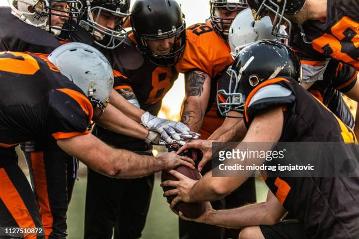
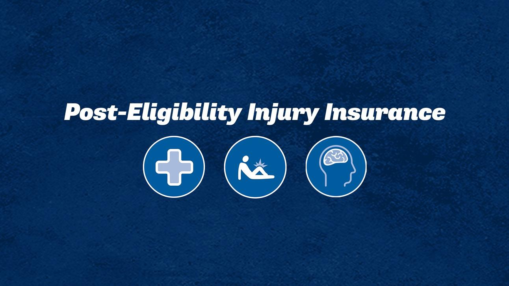

<!DOCTYPE html>
<html lang="en">
    </html>
    <head>
        <meta name="viewport" content="width=device-width, initial scale=1.0">
        <title>Student Athletes</title>
        <link rel="preconnect" href="https://fonts.googleapis.com">
        <link rel="preconnect" href="https://fonts.gstatic.com" crossorigin>
        <link
            href="https://fonts.googleapis.com/css2?family=Abel&family=Fraunces:ital,ospz,wght@0,9..144,100..900;1,9..144,100..900"
            rel="stylesheet">
        <link href="https://cdn.jsdelivr.net/npm/bootstrap@5.3.3/dist/css/bootstrap.min.css" rel="stylesheet"
            integrity="sha384-QWTKZyjpPEjISv5WaRU9OFeRpok6YctnYmDr5pNlyT2bRjXh0JMhjY6hW+ALEwIH" crossorigin="anonymous">
        <script src="https://cdn.jsdelivr.net/npm/bootstrap@5.3.3/dist/js/bootstrap.bundle.min.js"
            integrity="sha384-YvpcrYf0tY3lHB60NNkmXc5s9fDVZLESaAA55NDzOxhy9GkcIdslK1eN7N6jIeHz"
            crossorigin="anonymous"></script>
        <link rel="stylesheet" href="css/style.css">
        <link rel="stylesheet" type="stec">
     
        <script src="https://cdn.jsdelivr.net/npm/chart.js"></script>

    </head>
    

<body>
    <main>

    <header>
    <h2>The Truth Behind America’s Love - Sports</h2>
    <h5>By: Tahlia Williams</h5>
</header>

<div class="container"> </div>
<p>In the realm of college athletics, the glory of victory on the field often overshadows the harsh realities faced by student-athletes behind the scenes. As the debate over the impact of college sports on a student-athlete intensifies, a closer examination reveals a complex landscape with far-reaching implications for athletes. </p>

<h3><u>Glory Amidst Grind</u></h3>

<p>College sports have long been celebrated as a source of pride and tradition for universities and their students. From the exhilaration of game-day victories to the sense of camaraderie among teammates, the allure of college athletics is undeniable. Yet, beneath the surface lies a grueling reality for student-athletes. Balancing rigorous training schedules with demanding academic commitments, the life of a college athlete is a delicate balancing act. The pressure to excel both on the field and in the classroom is relentless, requiring unwavering dedication and resilience. 
</p>

<h3><u>Unveils Dual Realities</u></h3>
<p>While college athletics offer a platform for athletes to showcase their talent and gain exposure to professional scouts, the journey is fraught with challenges. According to NCSA College Recruiting, a non-profit organization that connects student athletes with college coaches, “fewer than 2% of high school athletes get an athletic scholarship to help pay for college.” Moreover, the commercialization of college sports has raised concerns about exploiting student athletes, who often receive little to no compensation for their contributions. The disparities in financial compensation are evident, with only a select few athletes receiving full-ride scholarships for Division I headcount sports. This reality starkly contrasts the significant revenue generated by college athletic programs, prompting calls for compensation and support for student-athletes. 
</p>
<p>However, college sports can also negatively impact student athletes. The pressure to perform can lead to physical and mental exhaustion and academic challenges. According to a study conducted by the NCAA, student-athletes spend an average of 35 hours per week on their sport during their season, making it difficult to balance academics and athletics. Balancing the demands of academics and athletics presents a significant challenge for student-athletes, requiring strong time management skills. College athletes are no strangers to rigorous training schedules, early morning practices, and the unwavering commitment needed to excel in their sport; therefore, they must learn to allocate their time efficiently, juggling practices, games, and coursework. As a student-athlete, academics come first. Maintaining your school’s GPA requirement is essential, as you might be benched or taken off the team if you fail to meet those standards. According to a survey conducted by the NCAA, “student athletes continue to report elevated levels of mental health concerns. They reported lower levels of hopelessness in fall 2021 as compared to the onset of the pandemic. However, elevated rates of mental exhaustion, anxiety, and feelings of being depressed have seen little change since 2020.” Compared to data from 2019 51% of athletes surveyed reported they “felt overwhelmed by all you had to do” in comparison to Fall 2021 where the data saw an increase to 78%. 
</p>

<h3><u>A Beacon of Hope, Yet Still Lies a Struggle</u>
</h3>
<p>Despite their challenges, college athletes continue to excel on and off the field. Success stories like that of Zion Williamson, whose journey from Duke University to the NBA captivated audiences worldwide, serve as testaments to the transformative power of college athletics. However, behind these success stories lie countless student-athletes grappling with physical and mental exhaustion, academic pressures, and the constant pursuit of excellence. “College sports are uniquely American and uniquely amazing. Millions of adults believe, to their core, that the lessons they learned as student-athletes changed their lives. I hear the same messages when I speak with today’s student-athletes,” says NCAA President Charlie Baker  
</p>
<h3><u>Calls for Change</u>
</h3>


<p>In response to the hardships faced by student-athletes, the NCAA has implemented measures to provide increased support and resources. Beginning in August, student-athletes across all divisions will have access to post-eligibility insurance to cover injuries sustained while present and representing their school. Additionally, the NCAA has mandated increased support for Division I athletes' physical, mental, and academic well-being by August 1st. These initiatives aim to address student-athlete challenges and ensure their development and success. 
</p>
<h3><u>Moving Forward</u>
</h3>
<p>As college sports continue to evolve, it is imperative to prioritize the well-being and empowerment of student-athletes. By leveraging data-driven insights and implementing equitable policies and practices, universities can create a more inclusive and supportive environment for student-athletes to thrive. Ultimately, the true measure of success in college athletics lies in the number of victories on the field and the development and well-being of the student-athletes who make it all possible. 
</p>
<p>In conclusion, the statistics paint a compelling picture of the challenges and disparities facing student-athletes in college athletics. By acknowledging these realities and taking concrete steps to address them, we can work towards a future where all student-athletes have the opportunity to strive both on and off the field. 
    <canvas id="myChart" width="400" height="200"></canvas>
    <script>
       document.addEventListener('DOMContentLoaded', function () {
    var ctx = document.getElementById('myChart').getContext('2d');

    var myChart = new Chart(ctx, {
        type: 'bar',
        data: {
            labels: ['Track & Field', 'Soccer', 'Softball/Baseball', 'Lacrosse'],
            datasets: [{
                label: 'Men',
                backgroundColor: 'rgba(54, 162, 235, 0.5)',
                borderColor: 'rgba(54, 162, 235, 1)',
                borderWidth: 1,
                data: [25, 13, 18, 12] // Sample data for men's mental health
            }, {
                label: 'Women',
                backgroundColor: 'rgba(255, 99, 132, 0.5)',
                borderColor: 'rgba(255, 99, 132, 1)',
                borderWidth: 1,
                data: [37, 31, 30, 17] // Sample data for women's mental health
            }]
        },
        options: {
            scales: {
                yAxes: [{
                    ticks: {
                        beginAtZero: true
                    }
                }]
            }
        }
    });
});

    </script>
    
</p>


</main>

<head>

</body>

</html>

<!DOCTYPE html>
<html lang="en">
<head>
    <meta charset="UTF-8">
    <meta name="viewport" content="width=device-width, initial-scale=1.0">
    <title>College Sports Timeline</title>
    <link rel="stylesheet" href="style.css">
</head>
<body>
    <div class="timeline">
        <div class="event">
            <div class="event-date">1906</div>
            <div class="event-description">
                <h3>Formation of NCAA</h3>
                <p>The National Collegiate Athletic Association (NCAA) is founded to regulate college sports.</p>
            </div>
        </div>
        <div class="event">
            <div class="event-date">1921</div>
            <div class="event-description">
                <h3>College Basketball</h3>
                <p>The NCAA adopts rules for collegiate basketball.</p>
            </div>
        </div>
        <div class="event">
            <div class="event-date">1939</div>
            <div class="event-description">
                <h3>First NCAA Men's Basketball Tournament</h3>
                <p>The first NCAA Men's Basketball Tournament (March Madness) is held.</p>
            </div>
        </div>
        <div class="event">
            <div class="event-date">1951</div>
            <div class="event-description">
                <h3>"Sanity Code"</h3>
                <p>The NCAA introduces a "sanity code" to address abuses and corruption in sports.</p>
            </div>
        </div>
        <div class="event">
            <div class="event-date">1964</div>
            <div class="event-description">
                <h3>Formation of NCAA Divisions</h3>
                <p>The NCAA divides its membership into three divisions: Division I, Division II, and Division III.</p>
            </div>
        </div>
        <div class="event">
            <div class="event-date">1972</div>
            <div class="event-description">
                <h3>Title IX</h3>
                <p>Title IX is enacted, prohibiting sex discrimination in federally funded education programs, greatly impacting women's collegiate sports.</p>
            </div>
        </div>
        <div class="event">
            <div class="event-date">1973</div>
            <div class="event-description">
                <h3>Women's Championships</h3>
                <p>The NCAA begins sponsoring women's championships in various sports.</p>
            </div>
        </div>
        <div class="event">
            <div class="event-date">1982</div>
            <div class="event-description">
                <h3>First NCAA Women's Basketball Tournament</h3>
                <p>The first NCAA Women's Basketball Tournament is held.</p>
            </div>
        </div>
        <div class="event">
            <div class="event-date">1991</div>
            <div class="event-description">
                <h3>NCAA Academic Progress Rate</h3>
                <p>The NCAA establishes the Academic Progress Rate (APR) to measure academic success among student-athletes.</p>
            </div>
        </div>
        <div class="event">
            <div class="event-date">2004</div>
            <div class="event-description">
                <h3>Expansion of NCAA</h3>
                <p>The NCAA expands to include a Division I Football Bowl Subdivision (FBS) and a Division I Football Championship Subdivision (FCS).</p>
            </div>
        </div>
        <div class="event">
            <div class="event-date">2020</div>
            <div class="event-description">
                <h3>COVID-19 Pandemic</h3>
                <p>The COVID-19 pandemic severely impacts college sports, leading to cancellations, postponements, and adjustments in scheduling.</p>
            </div>
        </div>
        <div class="event">
            <div class="event-date">2021</div>
            <div class="event-description">
                <h3>Name, Image, and Likeness Rule</h3>
                <p>The NCAA announces significant changes to its rules regarding student-athlete compensation, allowing them to profit from their name, image, and likeness.</p>
            </div>
        </div>
    </div>
</body>
</html>
